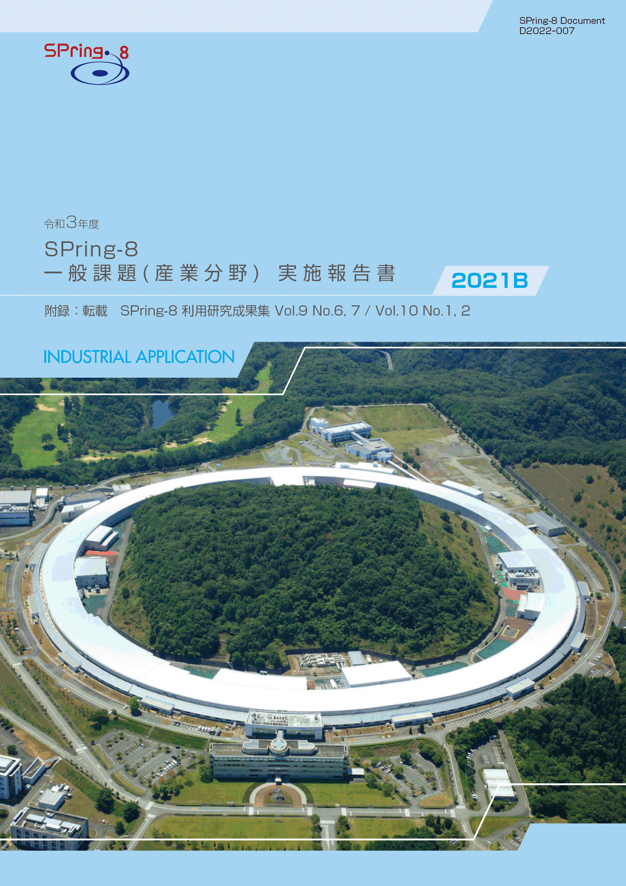
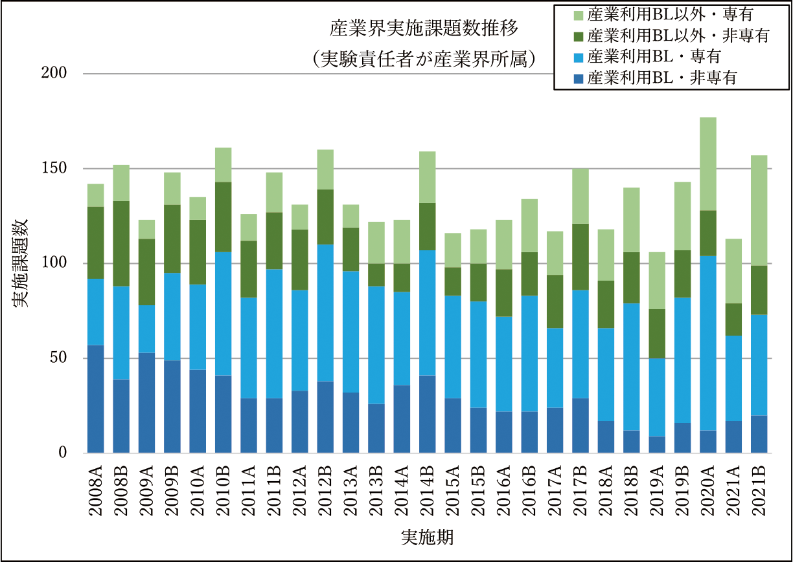

目次

1. はじめに2. 課題募集制度の概要
3. 成果公開の考え方
4. 実施状況
5. 産業利用分野の利用動向
6. 報告書
* 送付を希望される方は、連絡先（氏名、所属、〒住所、E-mail）をご記入の上、 事務局 support@spring8.or.jp までE-mailでご連絡ください。
はじめに
本報告書は2021B期に一般課題（産業利用分野）として実施された産業利用分野における課題実施状況の報告を目的として、SPring-8利用研究成果集としての審査を行わなかった課題の報告書を収録したものである。
本報告書が対象としている課題募集制度の概要
- 一般課題（産業利用分野）
一般課題（産業利用分野）の課題とは、課題申請の際に産業利用分野（I）での課題審査を希望した成果非専有の一般課題（課題審査は課題審査委員会産業利用分科会が行う）である。なお、実験責任者もしくは共同実験者に民間企業もしくは、それに準じる機関に所属する者が含まれていることを申請要件としている。民間企業に準ずる機関とは、民間企業からの委託による試験・研究・開発を事業に含んでいる機関と定義している。また、地方自治体が設置している公設試験場や地方独立行政法人等（○○県工業技術センター）は、民間企業に準ずる機関から除外している。産業利用ビームライン以外での実施を希望する一般課題（産業利用分野）は他分野の一般課題と同様に課題募集は年2回であるが、3本の産業利用ビームラインにおいては年6回（半期3回）の募集を行う。一般課題（産業利用分野）に特徴的な制度は以下の6項目である。
- 産業利用ビームラインI（BL19B2）、II（BL14B2）、III（BL46XU）は半期ごとに3回(1期、2期、3期)の課題募集を行う（年6回課題募集を実施）。これらのビームラインでは成果非専有の一般課題は、審査希望分野が産業利用分野である一般課題（産業利用分野）のみ申請を受付けている（これらのビームラインを指定した申請であるものの、審査希望分野が他分野の課題は申請者の希望にかかわらず産業利用分野で審査する）。*注）
- 新規利用拡大の観点から課題審査において利用経験を考慮する。
- 民間企業利用拡大の観点から課題審査において所属機関を考慮する。
- 課題実施後約2～4か月以内に所定の書式の産業利用課題実施報告書を提出する。なお、この報告書はSPring-8利用研究成果集として審査を受けることも可能である。
- 全採択課題に担当コーディネーターを配置する。
- 科学技術的妥当性に関する審査は
(1)産業基盤技術としての重要性および発展性
(2)社会的意義および社会経済への寄与度の観点を重視して実施する
に重点をおいて実施する。
*注）産業利用ビームライン3本でも大学院生提案型課題は受付けている。一般課題（産業利用分野）と同様の審査が行われる。
本報告書が対象としている課題の成果公開の考え方
成果の公開については、他の成果非専有の一般課題と同様に学術誌上への論文掲載（博士論文も含む）もしくはSPring-8利用研究成果集への採録による成果公開が求められる。この産業利用課題実施報告書の提出は成果の公開とは認定されないが、これらの報告書は著者からの申し出により課題ごとにSPring-8利用研究成果集としての審査を受けることが可能である。SPring-8利用研究成果集としての審査を受けない実施報告書は、JASRIコーディネーター等による校閲を経て課題実施期が終了して約6か月後に出版･公開されるが、それ以外はSPring-8利用研究成果集としての掲載をもって公開とする。なお、利用研究成果集は、複数課題で1報も認めているが、継続した研究であっても一般課題（産業利用分野）では1課題あたり1報を原則としている（例外：研究内容に継続性がある成果公開優先利用課題との統合）
実施状況
以下に令和3年度2021B期の一般課題（産業利用分野）の応募・採択結果を表1にまとめる。
- 応募・採択結果 一般課題（産業利用分野）
表 1．応募時期及び研究機関別一般課題応募・採択結果
＊ 応募数と採択数には、一般課題と同時に審査される大学院生提案型課題（応募数 B1期 7課題、B2期 6課題、B3期 7課題 ／ 採択数 B1期 5課題、B2期 6課題、B3期 4課題）を除く。12条課題として扱われるJASRI職員が実験責任者の一般課題（応募数 B1期 5課題、B2期2課題、B3期 4課題 ／ 採択数 B1期 3課題、B2期1課題、B3期 1課題）を含む。募集時期 機関分類 応募数＊採択数採択率（%）第1期募集学官422969.0産業界201470.0合計624369.4第2期募集学官302066.7産業界5360.0合計352365.7第3期募集学官221463.6産業界22100.0合計241666.7総計1218267.8
今期2021Bと一昨年度の2019Bおよび新型コロナウィルス感染症の影響が大きく変則的なスケジュール（2020年4月12日〜6月15日の期間のSPring-8の利用停止）となった昨年度の同時期に当たる2020A下期：4、5期と追加募集（2020年度は下期の募集は行わず、通年で2020A期として産業利用ビームラインでは上期A1〜A3、下期A4、A5期の5回募集を行い、産業利用ビームライン以外は上期と追加募集の2回募集を行った）の課題実施状況を比較すると、まず応募課題数は2019Bが118課題であるのに対し、2020A下期は68課題と大きく減少したが、今年度の2021B期は121課題と元の水準に回復している。採択率も2019B期の72.9％に対し、2020A下期に55.9％に減少したが、今年度の2021B期は67.8％と回復している。なお、全体の課題申請に対する産業界からの課題数比率は応課題数については2019B期で28.0％、2020A下期で23.5％、今年度の2021B期で22.3％と若干減少傾向で推移しており、採択数については2019B期の29.1％に対し、昨年度の2020A下期は6％と大きく落ち込んだが、今年度の2021B期は23.2％と回復した。
- SPring-8利用研究成果集としての審査
前記のとおり2011B期より成果公開の扱いが変更になったため、実験責任者の希望に応じて重点産業利用報告書をSPring-8利用研究成果集（現在はSPring-8/SACLA利用研究成果集）として査読審査を受けて公開文書として扱うことも可能とした。放射光施設横断産業利用課題及び産業利用分野の一般課題も同様で、SPring-8/SACLA利用研究成果集として審査を受ける公開文書とすることができる。SPring-8/SACLA利用研究成果集への公開は査読審査が終了し成果審査委員会での承認後となるため、SPring-8/SACLA利用研究成果集に投稿予定の課題は採録していない。このため、今回は2021B期の採録対象課題 77課題のうち、3課題がSPring-8/SACLA利用研究成果集に投稿されたため、それ以外の74課題を掲載する。また、2021A期の報告書発行後に対象課題でSPring-8/SACLA利用研究成果集に掲載された12課題の報告書を付録として掲載する。
産業利用分野の利用動向
-
図1は産業利用ビームラインが現在の3本体制になった2008A期以降の産業界ユーザーの実施課題の推移である。昨年度の2020A期で実施課題数が突出しているのはコロナ感染症対策の影響で変則的な募集スケジュールとなり、通年で2020A期となっていることを反映していることに注意されたい。そのため、前年度の2020年度の状況と比較するのは難しいが、この図1が示すように、まだ新型コロナウィルス感染症の影響が残っているにも関わらず、産業界ユーザーの利用は一昨年度の同時期の2019B期を上回るレベルで回復している。近年認められる産業界が成果専有課題を利用する傾向は相変わらず強く、産業利用ビームラインでは2018A期以降成果専有課題の利用比率は7割以上であり、特に今期は産業利用ビームライン以外のビームラインで約７割と大きく増えており、これが産業界ユーザー利用の回復を牽引している。なお、2019A期から開始した産業利用ビームラインで実施する時期指定成果専有課題に属する産業利用準備課題*は3課題の実施があった。
*) 産業利用準備課題
本格的な課題申請に先立って、測定の可否や測定条件検討を目的とした課題。測定代行と同様、随時受付、来所不要であるが、2時間を上限にBL14B2、BL19B2、BL46XUで実施可能であれば、利用技術を限定せず（例えば、測定代行を実施していない多軸回折装置を用いた歪測定など）に受付ける。

報告書
令和3年度 SPring-8 一般課題(産業分野)実施報告書 (2021B)附録 “SPring-8/SACLA利用研究成果集 Section B”より転載
発 行 日： 令和 4 年 8 月 25 日
編集・発行： 公益財団法人 高輝度光科学研究センター
「令和3年度 SPring-8 一般課題(産業分野)実施報告書 (2021B)」送付を希望される方は、 連絡先（氏名,所属,〒住所,E-mail）をご記入の上、事務局 support@spring8.or.jp までE-mailでご連絡ください。